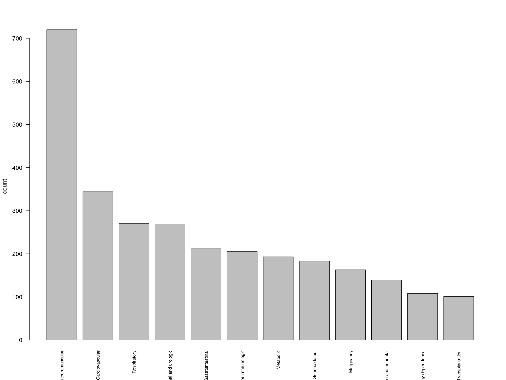

PCCC.RmdThe adult comorbidities defined by authors such as Charlson, Quan and Elixhuaser are not suitable for pediatric research. Feudtner and others produced comorbidity definitions suitable for infants and children, with mappings defined for both ICD-9 and ICD-10 codes [Feinstein et al. (2018); Feudtner_Pediatriccomplexchronic_2014]. These are now included in the icd package for R, which enables fast calculation of comorbidities for PCCC and other ICD code to comorbidity maps.
The PCCC comorbidities may be derived from both diagnostic and procedure codes. The following simulated data has both:
## id icd_dx1 icd_dx2 icd_pcs1 icd_pcs2
## 1 10001 S32010B T422X3D 0SWJ37Z 00QS4ZZ
## 2 10002 D686 A42 0D124JB 03QB4ZZ
## 3 10003 S32021G M4806 2W03X6Z D91497Z
## 4 10004 S61320A T475X6A 03SP4ZZ 0BU207Z
## 5 10005 S054 S90222A 06104ZP B41D1ZZ
## 6 10006 M12232 V9209XS 0XRL07P 0PUM0JZThe data is in ‘wide’ format. icd no longer needs the data to be in ‘long’ format. The PCCC comorbidity classes can be computed directly from the source data and summarized in a plot. Here we calculate the PCCC from ICD diagnostic codes and ICD procedure codes separately, and logically combine them to get the result.
pccc_dx <- comorbid_pccc_dx(dat)
pccc_pcs <- icd10_comorbid_pccc_pcs(dat,
icd_name = c("icd_pcs1", "icd_pcs2"))
res <- pccc_dx | pccc_pcs
Feinstein, James A., Seth Russell, Peter E. DeWitt, Chris Feudtner, Dingwei Dai, and Tellen D. Bennett. 2018. “R Package for Pediatric Complex Chronic Condition Classification.” JAMA Pediatrics 172 (6): 596–98. https://doi.org/10.1001/jamapediatrics.2018.0256.